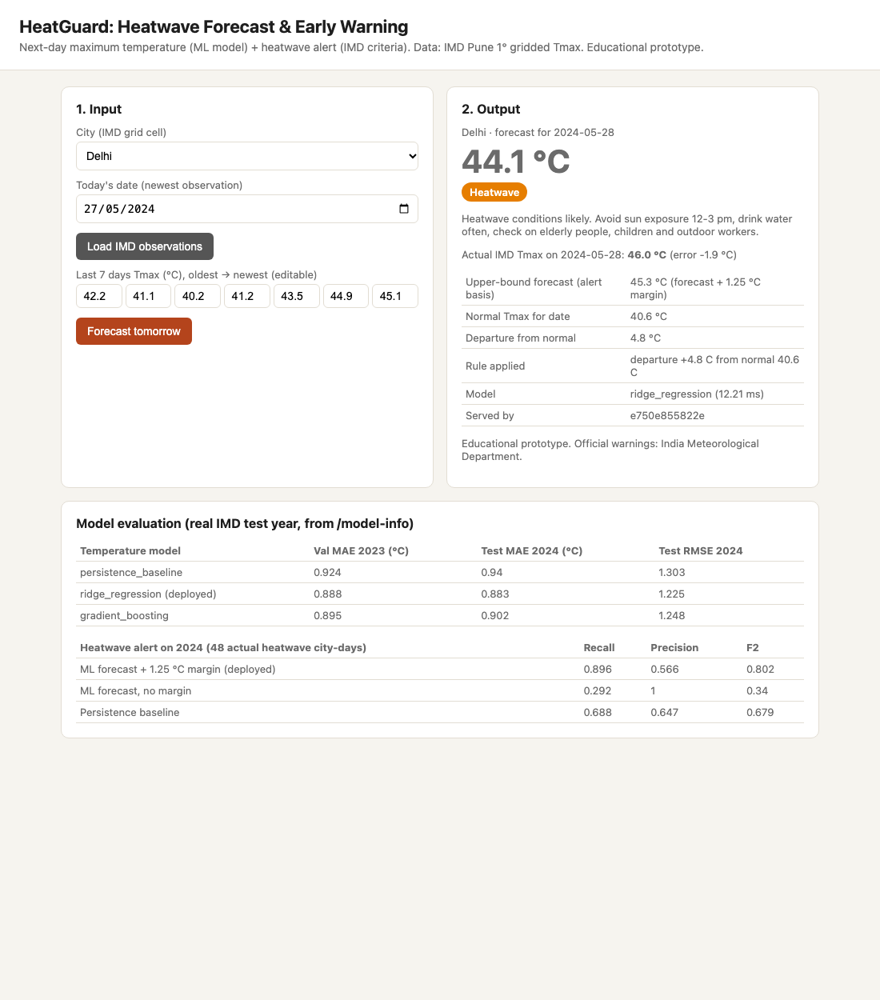

Somaiya Vidyavihar University · K J Somaiya School of Engineering
Cloud Computing · Mini Project Report
Cloud Computing Experiments integrated with the Somaiya AI Use Case
KJS-CES-01: Climate Intelligence for Heatwave Monitoring, Prediction and Early Warning
| Student | Ayushi Ranjan |
| Roll No. | 16014223028 |
| Batch | B1 |
| Submission | Individual |
| Selected use case | Case 5: Climate Intelligence for Heatwave Monitoring, Prediction and Early Warning |
| Selected experiments | 2 Containerization, Docker and Docker Hub · 3 Application Deployment using Kubernetes · 7 Cloud Cost Optimization through Resource Right-Sizing · 8 FinOps Principles and Instance-Type Comparison |
| Source code | https://github.com/ayushiii2707/CC-Mini-Project---Heatwave-Forecast |
| Docker image | https://hub.docker.com/r/ayushiranjan27/heatguard |
| Date | 11 October 2026 |
HeatGuard is a working prototype of the heatwave early-warning use case. It reads real India Meteorological Department (IMD) gridded daily maximum-temperature data for 2014–2024, forecasts the next day's maximum temperature for ten Indian cities with a machine-learning model, and converts the forecast into a heatwave alert using IMD's published criteria. On the unseen year 2024 the deployed ridge-regression model has a mean absolute error of 0.883 °C (persistence baseline 0.94 °C), and the alert logic detects 89.6% of the 48 actual heatwave city-days with a precision of 56.6%. The service is containerised and published on Docker Hub (Experiment 2), deployed on a Kubernetes cluster with scaling, self-healing, rollback and a rolling update (Experiment 3), right-sized from 2 vCPU / 2 GB to 0.75 vCPU / 192m with an estimated -65.2% change in hourly cost (Experiment 7), and compared across three instance sizes under the same workload to find the cheapest size meeting a pre-defined performance target (Experiment 8). All results in this report come from real runs; costs are estimates.
Problem. Heatwaves in India are increasing in frequency, intensity and duration and affect public health, agriculture and economic activity. Severity varies by region, so timely, region-specific warnings are needed (Use-case document KJS-CES-01, §6).
Objectives.
Prototype scope.
| In scope | Out of scope (see Limitations) |
|---|---|
| IMD 1°×1° gridded daily Tmax, 2014–2024, ten city grid cells | IoT Automated Weather Stations (hardware) |
| Next-day Tmax regression + IMD rule-based severity | Multi-day forecasts, spatial hotspot maps of all 7 IMD regions |
| Template advisories per severity level | LLM-generated advisories (listed as future work) |
| REST API + web dashboard, Docker, Kubernetes | Real cloud deployment and billing (costs are estimates) |
.GRD file per year, float32, 31 × 31 grid (7.5–37.5 °N, 67.5–97.5 °E), 99.9 = missing.
File sizes were checked: 1,403,060 bytes for 365-day years and 1,406,904 bytes for leap years.scripts/download_imd.sh. The IMD server is slow and dropped connections (2017 needed three
attempts), so the script retries and accepts only full-size files.scripts/prepare_data.py parses the grid, extracts the cell nearest to each of ten cities
(Delhi, Jaipur, Lucknow, Patna, Ahmedabad, Nagpur, Kolkata, Bhubaneswar, Hyderabad, Chennai) and writes 40,180 daily rows.
Grid orientation was verified (sea cells missing, Ladakh cold, Delhi ≈ 17 °C in January and ≈ 40 °C in May).| Layer | Tools (versions as run) |
|---|---|
| Language / ML | Python 3.13, NumPy 2.5.4, scikit-learn 1.9.1, pandas 3.0.6 (training only), joblib 1.6.0 |
| Service | FastAPI 0.143.0, Uvicorn 0.54.0, HTML/JS dashboard (no external libraries) |
| Testing / load | pytest 9.1.1, httpx 0.28.1 (async load generator) |
| Containers (Exp 2) | Docker Desktop, engine 29.7.2 (arm64), docker buildx, Docker Hub |
| Orchestration (Exp 3) | kind v0.33.0 (Kubernetes v1.37.0), kubectl v1.36.1 |
| Measurement (Exp 7, 8) | docker stats, custom runner experiments/run_config.py, matplotlib 3.11.2 |
| Hardware | Apple MacBook M2, 8 GB RAM (Docker VM: 8 CPUs, 3.8 GiB) |
The AI part is kept separate from the cloud part so each can be explained on its own.
Input features (app/features.py, shared by training and serving): the last 7 daily Tmax values, their
mean, day-of-year as sine/cosine, the climatological normal for the target day (from 2014–2022 only, to avoid leakage),
and the cell's latitude and longitude. Target: Tmax on the next day. Three approaches were compared; the model with the
lowest validation error was deployed and the test year was used only once for final reporting.
| Model | Validation MAE 2023 (°C) | Test MAE 2024 (°C) | Test RMSE 2024 (°C) |
|---|---|---|---|
| persistence_baseline | 0.924 | 0.94 | 1.303 |
| ridge_regression (deployed) | 0.888 | 0.883 | 1.225 |
| gradient_boosting | 0.895 | 0.902 | 1.248 |
Test MAE by city (°C): Ahmedabad 0.724, Bhubaneswar 0.869, Chennai 0.74, Delhi 1.057, Hyderabad 0.818, Jaipur 0.913, Kolkata 0.88, Lucknow 0.989, Nagpur 0.825, Patna 1.015.
Interpretation: the ML model is about 6% more accurate than the persistence baseline. Day-to-day temperature is strongly persistent, so the gain is modest but consistent; the simpler linear model generalised slightly better than gradient boosting.
app/severity.py applies the IMD heatwave definitions (IMD, Heat wave definitions): a heatwave is
considered only if Tmax ≥ 40 °C (plains) or ≥ 37 °C (coastal). Departure from normal 4.5–6.4 °C → Heatwave, > 6.4 °C →
Severe heatwave; for plains, Tmax ≥ 45 °C → Heatwave and ≥ 47 °C → Severe. Coastal stations have only a Heatwave category.
Kolkata and Chennai are treated as coastal.
Evaluated directly on the forecast, alerts detected only 29.2% of real heatwave days: regression pulls extreme values towards the mean, so the forecast rarely crossed the IMD thresholds. Because a missed heatwave is costlier than a false alarm, alerts are issued on an upper-bound forecast (forecast + margin). The margin was chosen on the 2023 validation year by F2 score (which weights recall above precision): margin 1.25 °C. The 2023 year contains only 14 heatwave city-days, so this choice is uncertain.
| Alert method (test 2024, 48 actual heatwave city-days) | Recall | Precision | F2 |
|---|---|---|---|
| ML forecast + 1.25 °C margin (deployed) | 0.896 | 0.566 | 0.802 |
| ML forecast, no margin | 0.292 | 1.0 | 0.34 |
| Persistence baseline | 0.688 | 0.647 | 0.679 |
Confusion matrix of the deployed alert on 2024 (rows = actual, columns = predicted; Normal / Heatwave / Severe): [3579, 33, 0], [5, 37, 2], [0, 3, 1]. The system detects most heatwave days but about 4 in 10 alerts are false alarms.
Aim (manual): install Docker, pull and run images from Docker Hub, modify containers to run an application and push it to Docker Hub. Use-case connection: the HeatGuard forecast service, trained model and IMD city data are packaged as one image, which every later experiment uses unchanged.
Procedure. (1) Docker Desktop installed; Docker Hub account ayushiranjan27 created and docker login done by
the student. (2) Manual tasks: nginx pulled and run on port 8080, hello-world and Ubuntu run, Docker commands explored.
(3) Dockerfile written (python:3.13-slim, non-root user, HEALTHCHECK). (4) Image built, run and tested, including invalid inputs.
(5) Image pushed for arm64 and amd64 with docker buildx; nginx pushed. (6) Local tag removed, image pulled back from
Docker Hub and run.
Dockerfile
# HeatGuard: heatwave forecast API (Experiment 2: containerisation)
FROM python:3.13-slim
WORKDIR /srv
ENV PYTHONDONTWRITEBYTECODE=1 PYTHONUNBUFFERED=1
COPY requirements.txt .
RUN pip install --no-cache-dir -r requirements.txt
# Application code, trained model and the processed IMD city series used by /observed
COPY app/ app/
COPY models/ models/
COPY data/processed/ data/processed/
# Run as an unprivileged user
RUN useradd --create-home appuser
USER appuser
EXPOSE 8000
HEALTHCHECK --interval=15s --timeout=3s --start-period=10s \
CMD python -c "import urllib.request; urllib.request.urlopen('http://localhost:8000/health')"
CMD ["uvicorn", "app.main:app", "--host", "0.0.0.0", "--port", "8000"]
exp2_run.log
$ docker run -d --name heatguard -p 8000:8000 heatguard:1.0
e6e7fb4dddac7b74ede30f8adc679c1737b572ca36159d79aafc88625b7fb3e5
$ docker ps --filter name=heatguard
NAMES IMAGE STATUS PORTS
heatguard heatguard:1.0 Up 6 seconds (healthy) 0.0.0.0:8000->8000/tcp, [::]:8000->8000/tcp
$ curl -s localhost:8000/health
{"status":"ok","model":"ridge_regression","pod":"e6e7fb4dddac"}
$ curl -s "localhost:8000/observed?city=Delhi&date=2024-05-27"
{"city":"Delhi","date":"2024-05-27","recent_tmax":[42.209049224853516,41.137046813964844,40.19950866699219,41.15043640136719,43.54515838623047,44.9291
$ curl -s -X POST localhost:8000/predict -H "Content-Type: application/json" -d '{"city":"Delhi","date":"2024-05-27","recent_tmax":[<values above>]}'
{
"city": "Delhi",
"forecast_date": "2024-05-28",
"forecast_tmax": 44.1,
"upper_forecast_tmax": 45.3,
"alert_margin_c": 1.25,
"normal_tmax": 40.6,
"alert": "Heatwave",
"departure_from_normal": 4.8,
"rule": "departure +4.8 C from normal 40.6 C",
"advisory": "Heatwave conditions likely. Avoid sun exposure 12-3 pm, drink water often, check on elderly people, children and outdoor workers.",
"model": "ridge_regression",
"inference_ms": 8.15,
"pod": "e6e7fb4dddac",
"note": "Educational prototype. Official warnings: India Meteorological Department."
}
exp2_run.log
# Failure scenario 1: unknown city
$ curl -s -w " HTTP %{http_code}" -X POST localhost:8000/predict -d {"city":"Atlantis",...}
{"detail":"unknown city 'Atlantis'. Supported: Delhi, Jaipur, Lucknow, Patna, Ahmedabad, Nagpur, Kolkata, Bhubaneswar, Hyderabad, Chennai"} HTTP 404
# Failure scenario 2: implausible sensor value (99.9 = IMD missing code)
{"detail":[{"type":"value_error","loc":["body","recent_tmax"],"msg":"Value error, temperature 99.9 C is outside the plausible range -10..55 C","input"
# Failure scenario 3: only 3 values instead of 7
{"detail":[{"type":"too_short","loc":["body","recent_tmax"],"msg":"List should have at least 7 items after validation, not 3","input":[40,41,42],"ctx"
exp2_manual_tasks.log
$ docker run -d --name web-nginx -p 8080:80 nginx:latest
b7c80f153b262ff0084cc325669d72dc3b1c2341b9638a78e55df808dc980ac6
$ curl -s localhost:8080 | grep -i "<title>"
<title>Welcome to nginx!</title>
$ docker run --rm hello-world
Hello from Docker!
This message shows that your installation appears to be working correctly.
To generate this message, Docker took the following steps:
1. The Docker client contacted the Docker daemon.
2. The Docker daemon pulled the "hello-world" image from the Docker Hub.
(arm64v8)
3. The Docker daemon created a new container from that image which runs the
executable that produces the output you are currently reading.
4. The Docker daemon streamed that output to the Docker client, which sent it
to your terminal.
To try something more ambitious, you can run an Ubuntu container with:
$ docker run -it ubuntu bash
Share images, automate workflows, and more with a free Docker ID:
https://hub.docker.com/
For more examples and ideas, visit:
https://docs.docker.com/get-started/
exp2_push.log
$ docker buildx imagetools inspect ayushiranjan27/heatguard:1.0
Name: docker.io/ayushiranjan27/heatguard:1.0
MediaType: application/vnd.oci.image.index.v1+json
Digest: sha256:7ac1187626dbdda4e691f0b0d935e3d238056d501cfe18d3138a02bbd495207c
Manifests:
Name: docker.io/ayushiranjan27/heatguard:1.0@sha256:16ea477943ddcc9311aa5da8396ca93e40c00681e683eeea9354bb480fc2b67c
MediaType: application/vnd.oci.image.manifest.v1+json
Platform: linux/arm64
Name: docker.io/ayushiranjan27/heatguard:1.0@sha256:24ecb9d5a8c2acbabe78cc009ef91d55eac6736bd1f46a5db57c3058cc086d17
MediaType: application/vnd.oci.image.manifest.v1+json
Platform: linux/amd64
Name: docker.io/ayushiranjan27/heatguard:1.0@sha256:c1cc990337778bec12e3686783cd053c0e2f2e2a3c890dff5cd3f8ca784cc192
MediaType: application/vnd.oci.image.manifest.v1+json
exp2_push.log
$ docker rmi ayushiranjan27/heatguard:1.0
Untagged: ayushiranjan27/heatguard:1.0
$ docker pull ayushiranjan27/heatguard:1.0
1.0: Pulling from ayushiranjan27/heatguard
Digest: sha256:7ac1187626dbdda4e691f0b0d935e3d238056d501cfe18d3138a02bbd495207c
Status: Downloaded newer image for ayushiranjan27/heatguard:1.0
docker.io/ayushiranjan27/heatguard:1.0
$ docker run -d --name heatguard-hub -p 8001:8000 ayushiranjan27/heatguard:1.0
7121f06d66c9410df245e65923452da8e97dab45d6db37147e6f701995047249
$ curl -s localhost:8001/health
{"status":"ok","model":"ridge_regression","pod":"7121f06d66c9"}

Results. Image size 136 MB (compressed content). Health check reports healthy; forecasts are served; unknown city returns 404 and
malformed inputs return 422 without crashing the service. Docker Hub lists heatguard:1.0, 1.1 and latest
for amd64 and arm64, and nginx-exp2:1.0. Version 1.1 only corrects the coastal heatwave rule (Section 4.2); forecast errors are identical.
Conclusion. The application was containerised, run and published; anyone can now run it with one docker run command on
Intel or Apple Silicon machines.
Aim (manual): deploy an application using Kubernetes, use kubectl commands and expose an app (preferably the image created in the Docker experiment). Use-case connection: the HeatGuard image from Docker Hub is deployed as a replicated, self-healing service, as an early-warning service must stay available. Resource limits come from Experiment 7.
Procedure. The manual used the Killercoda playground; this project used kind (Kubernetes-in-Docker), a real Kubernetes
cluster running locally on Docker Desktop, so the full sequence could be scripted (experiments/exp3_kubernetes.sh) and
logged. Steps: create cluster → apply Deployment (2 replicas) and NodePort Service → access through the Service → scale to 3 → delete a
pod → set a non-existent image tag → roll back → rolling update to 1.1.
k8s/deployment.yaml
# Experiment 3: HeatGuard Deployment. Image is pulled from Docker Hub (Experiment 2).
# CPU/memory limits are the right-sized values measured in Experiment 7.
apiVersion: apps/v1
kind: Deployment
metadata:
name: heatguard
labels: {app: heatguard}
spec:
replicas: 2
selector:
matchLabels: {app: heatguard}
template:
metadata:
labels: {app: heatguard}
spec:
containers:
- name: heatguard
image: docker.io/DOCKERHUB_USER/heatguard:1.1
imagePullPolicy: Always
ports:
- containerPort: 8000
resources:
requests: {cpu: 250m, memory: 128Mi}
limits: {cpu: 750m, memory: 192Mi}
readinessProbe:
httpGet: {path: /health, port: 8000}
initialDelaySeconds: 3
periodSeconds: 5
livenessProbe:
httpGet: {path: /health, port: 8000}
initialDelaySeconds: 10
periodSeconds: 10
k8s/service.yaml
# Experiment 3: expose HeatGuard outside the cluster on NodePort 30080.
apiVersion: v1
kind: Service
metadata:
name: heatguard
spec:
type: NodePort
selector: {app: heatguard}
ports:
- port: 80
targetPort: 8000
nodePort: 30080
exp3_kubernetes.log
### 1. Deploy (image pulled from Docker Hub) and expose
$ kubectl apply -f /tmp/heatguard-deployment.yaml
deployment.apps/heatguard created
$ kubectl apply -f k8s/service.yaml
service/heatguard created
$ kubectl rollout status deployment/heatguard --timeout=300s
Waiting for deployment "heatguard" rollout to finish: 0 of 2 updated replicas are available...
Waiting for deployment "heatguard" rollout to finish: 1 of 2 updated replicas are available...
deployment "heatguard" successfully rolled out
$ kubectl get deployment heatguard
NAME READY UP-TO-DATE AVAILABLE AGE
heatguard 2/2 2 2 11s
$ kubectl get pods -o wide
NAME READY STATUS RESTARTS AGE IP NODE NOMINATED NODE READINESS GATES
heatguard-9ddf56c84-jxrpf 1/1 Running 0 11s 10.244.0.7 heatguard-control-plane <none> <none>
heatguard-9ddf56c84-wkhkq 1/1 Running 0 11s 10.244.0.8 heatguard-control-plane <none> <none>
$ kubectl get service heatguard
NAME TYPE CLUSTER-IP EXTERNAL-IP PORT(S) AGE
heatguard NodePort 10.96.84.104 <none> 80:30080/TCP 10s
$ kubectl describe pod heatguard-9ddf56c84-jxrpf | grep -E 'Image:|Pulled|Limits|cpu|memory'
Image: docker.io/ayushiranjan27/heatguard:1.0
Limits:
cpu: 750m
memory: 192Mi
Requests:
cpu: 250m
memory: 128Mi
Normal Pulled 5s kubelet spec.containers{heatguard}: Successfully pulled image "docker.io/ayushiranjan27/heatguard:1.0" in 1.465s
exp3_kubernetes.log
### 2. Service access + load balancing across pods
{"status":"ok","model":"ridge_regression","pod":"heatguard-9ddf56c84-jxrpf"}
{"status":"ok","model":"ridge_regression","pod":"heatguard-9ddf56c84-jxrpf"}
{"status":"ok","model":"ridge_regression","pod":"heatguard-9ddf56c84-wkhkq"}
{"status":"ok","model":"ridge_regression","pod":"heatguard-9ddf56c84-jxrpf"}
{"status":"ok","model":"ridge_regression","pod":"heatguard-9ddf56c84-wkhkq"}
{"status":"ok","model":"ridge_regression","pod":"heatguard-9ddf56c84-jxrpf"}
$ curl -X POST http://localhost:30080/predict (Delhi, real IMD values for 21-27 May 2024)
{"city":"Delhi","forecast_date":"2024-05-28","forecast_tmax":44.1,"upper_forecast_tmax":45.3,"alert_margin_c":1.25,"normal_tmax":40.6,"alert":"Heatwav
# invalid input through the Service
{"detail":"unknown city 'Atlantis'. Supported: Delhi, Jaipur, Lucknow, Patna, Ahmedabad, Nagpur, Kolkata, Bhubaneswar, Hyderabad, Chennai"} HTTP 404
exp3_kubernetes.log
### 4. Self-healing: delete a pod, the Deployment recreates it
$ kubectl delete pod heatguard-9ddf56c84-br798 --wait=false
pod "heatguard-9ddf56c84-br798" deleted from default namespace
$ kubectl get pods
NAME READY STATUS RESTARTS AGE
heatguard-9ddf56c84-br798 1/1 Terminating 0 8s
heatguard-9ddf56c84-jxrpf 1/1 Running 0 19s
heatguard-9ddf56c84-ltqpr 0/1 ContainerCreating 0 0s
heatguard-9ddf56c84-wkhkq 1/1 Running 0 19s
$ kubectl get pods
NAME READY STATUS RESTARTS AGE
heatguard-9ddf56c84-jxrpf 1/1 Running 0 35s
heatguard-9ddf56c84-ltqpr 1/1 Running 0 16s
heatguard-9ddf56c84-wkhkq 1/1 Running 0 35s
$ kubectl get deployment heatguard
NAME READY UP-TO-DATE AVAILABLE AGE
heatguard 3/3 3 3 35s
{"status":"ok","model":"ridge_regression","pod":"heatguard-9ddf56c84-ltqpr"}
{"status":"ok","model":"ridge_regression","pod":"heatguard-9ddf56c84-wkhkq"}
{"status":"ok","model":"ridge_regression","pod":"heatguard-9ddf56c84-jxrpf"}
exp3_kubernetes.log
### 5. Failure scenario: bad image tag -> rollout blocked, old pods keep serving -> rollback
$ kubectl set image deployment/heatguard heatguard=docker.io/ayushiranjan27/heatguard:does-not-exist
deployment.apps/heatguard image updated
$ kubectl get pods
NAME READY STATUS RESTARTS AGE
heatguard-68fc79f464-vmgq5 0/1 ImagePullBackOff 0 25s
heatguard-9ddf56c84-jxrpf 1/1 Running 0 60s
heatguard-9ddf56c84-ltqpr 1/1 Running 0 41s
heatguard-9ddf56c84-wkhkq 1/1 Running 0 60s
$ curl -s http://localhost:30080/health
{"status":"ok","model":"ridge_regression","pod":"heatguard-9ddf56c84-ltqpr"}
$ kubectl rollout undo deployment/heatguard
Warning: resource deployments/heatguard was previously managed with 'kubectl apply'. Rolling back will not update the kubectl.kubernetes.io/last-appli
deployment.apps/heatguard rolled back
$ kubectl rollout status deployment/heatguard --timeout=180s
deployment "heatguard" successfully rolled out
exp3_kubernetes.log
### 7. Rolling update 1.0 -> 1.1 (coastal heatwave rule fix), with availability check during rollout
$ kubectl set image deployment/heatguard heatguard=docker.io/ayushiranjan27/heatguard:1.1
deployment.apps/heatguard image updated
$ kubectl rollout status deployment/heatguard
Waiting for deployment "heatguard" rollout to finish: 1 out of 3 new replicas have been updated...
Waiting for deployment "heatguard" rollout to finish: 1 out of 3 new replicas have been updated...
Waiting for deployment "heatguard" rollout to finish: 1 out of 3 new replicas have been updated...
Waiting for deployment "heatguard" rollout to finish: 2 out of 3 new replicas have been updated...
Waiting for deployment "heatguard" rollout to finish: 2 out of 3 new replicas have been updated...
Waiting for deployment "heatguard" rollout to finish: 2 out of 3 new replicas have been updated...
Waiting for deployment "heatguard" rollout to finish: 2 out of 3 new replicas have been updated...
Waiting for deployment "heatguard" rollout to finish: 1 old replicas are pending termination...
Waiting for deployment "heatguard" rollout to finish: 1 old replicas are pending termination...
Waiting for deployment "heatguard" rollout to finish: 1 old replicas are pending termination...
deployment "heatguard" successfully rolled out
# availability during rollout: 39/40 health checks returned HTTP 200 (non-200: 1)
$ kubectl get pods -o wide
NAME READY STATUS RESTARTS AGE IP NODE NOMINATED NODE READINESS GATES
heatguard-df89b7b5f-7msn6 1/1 Running 0 33s 10.244.0.12 heatguard-control-plane <none> <none>
heatguard-df89b7b5f-czgdj 1/1 Running 0 14s 10.244.0.14 heatguard-control-plane <none> <none>
heatguard-df89b7b5f-p2ck5 1/1 Running 0 21s 10.244.0.13 heatguard-control-plane <none> <none>
$ kubectl rollout history deployment/heatguard
deployment.apps/heatguard
REVISION CHANGE-CAUSE
2 <none>
3 <none>
4 <none>
$ kubectl get deployment heatguard -o jsonpath="{.spec.template.spec.containers[0].image}"
docker.io/ayushiranjan27/heatguard:1.1
# coastal check through the Service (Chennai, hottest 2024 week)
[35.3, 37.2, 38.0, 39.0, 39.3, 40.8, 41.1]
Results. The image was pulled from Docker Hub by the cluster; both pods became Ready; requests were spread across pods; scaling to 3
worked; a deleted pod was replaced by the Deployment within about 16 s; a non-existent image tag stopped in ImagePullBackOff
while the 3 old pods kept serving, and kubectl rollout undo restored the Deployment. During the rolling update to 1.1, 39 of 40
health checks (every 0.5 s) returned HTTP 200 and one failed. A likely cause is a terminating pod still receiving a request before the Service
endpoints were updated; a preStop delay is the usual remedy (not implemented).
Conclusion. Kubernetes provided declarative deployment, service discovery, scaling and recovery for the HeatGuard service.
Aim (manual): analyse CPU and memory utilisation of an over-provisioned workload, apply right-sizing and measure cost and efficiency improvements without performance degradation. Use-case connection: the workload is the HeatGuard forecast API itself, loaded with forecast requests built from real 2024 IMD data.
Procedure. (1) Run the heatguard image with 2 vCPU / 2 GB (docker run --cpus 2 --memory 2g). (2) Send the fixed workload:
15,000 POST /predict requests, 20 concurrent clients, 100 warm-up requests, fixed random seed (loadtest/loadtest.py), while
sampling docker stats about once per second. (3) Repeat 3 times. (4) Right-size with the manual's rule, "slightly above peak with a
safety buffer" (experiments/rightsize.py): CPU = peak × 1.25 rounded up to 0.25 vCPU; memory = peak × 1.5 rounded up to 64 MiB.
(5) Re-run the same workload 3 times with the new limits. (6) Estimate cost.
Right-sizing decision (from rightsizing_decision.json): observed peak 0.566 cores and
105.5 MiB → 0.75 vCPU / 192m.
| Configuration | CPU peak (% of 1 core) | CPU used (% of limit) | Memory peak (MiB) | Memory used (% of limit) | Throughput (req/s) | p50 latency (ms) | p95 latency (ms) | Errors | Est. USD / hour | Est. USD / 1M predictions |
|---|---|---|---|---|---|---|---|---|---|---|
| over-provisioned 2.0 vCPU / 2g | 55.1 ± 2.5 | 27.5 ± 1.2 | 105.1 ± 0.5 | 5.1 ± 0.1 | 661.3 ± 19.9 | 15.0 ± 0.3 | 97.9 ± 3.0 | 0 | 0.0529 | 0.0222 |
| right-sized 0.75 vCPU / 192m | 47.0 ± 1.7 | 62.6 ± 2.3 | 115.5 ± 0.8 | 60.1 ± 0.4 | 590.5 ± 12.4 | 16.5 ± 0.4 | 108.6 ± 2.0 | 0 | 0.0184 | 0.0086 |
Change after right-sizing: throughput -10.7%, p50 latency +10.0%, p95 latency +10.9%, estimated hourly cost -65.2%, estimated cost per million predictions -61.3%. No errors and no out-of-memory kills in any run. The right-sized limits are used in the Kubernetes Deployment (Experiment 3).

Cost basis (estimate, not an actual charge): AWS Fargate on-demand, Linux/ARM, Asia Pacific (Mumbai): USD 0.02383 per vCPU-hour and
USD 0.00261 per GB-hour, read from the AWS public price list (publication date 2026-09-11), saved as
experiments/pricing/aws_ecs_ap-south-1_index.json. Hourly cost = vCPU × 0.02383 + GB × 0.00261; cost per million predictions = hourly cost ÷
(throughput × 3600) × 106. No cloud account was used.
Conclusion. The service was heavily over-provisioned (≈ 28% of CPU and 5% of memory used). Right-sizing cut the estimated cost by about two-thirds for a ~11% throughput reduction, an acceptable trade-off for this service. The manual's "without performance degradation" is only approximately met: a small, measured degradation occurred.
Aim (manual): compare different instance (resource) configurations for the same workload and identify the most cost-efficient option without performance degradation. Use-case connection: chooses the cheapest size on which the heatwave API still meets its response-time target.
Procedure (manual algorithm steps 1–10). Workload: identical to Experiment 7. Candidates: three AWS Fargate-valid sizes, emulated with
Docker limits. The performance target was written down before running (experiments/exp8_configs.json):
p95 latency ≤ 150 ms, zero errors, no OOM kill. Each configuration ran 3 times.
| Configuration | CPU peak (% of 1 core) | CPU used (% of limit) | Memory peak (MiB) | Memory used (% of limit) | Throughput (req/s) | p50 latency (ms) | p95 latency (ms) | Errors | Est. USD / hour | Est. USD / 1M predictions | Meets target |
|---|---|---|---|---|---|---|---|---|---|---|---|
| low 0.25 vCPU / 512m | 25.9 ± 0.5 | 103.4 ± 1.8 | 118.2 ± 0.7 | 23.1 ± 0.1 | 316.2 ± 5.1 | 54.8 ± 3.2 | 112.0 ± 0.7 | 0 | 0.0073 | 0.0064 | yes |
| medium 0.5 vCPU / 1g | 42.5 ± 1.9 | 85.0 ± 3.8 | 106.0 ± 0.5 | 10.3 ± 0.1 | 580.1 ± 35.9 | 16.7 ± 1.1 | 108.9 ± 6.7 | 0 | 0.0145 | 0.0070 | yes |
| high 1.0 vCPU / 2g | 52.9 ± 1.1 | 52.9 ± 1.1 | 105.7 ± 0.4 | 5.2 ± 0.1 | 603.2 ± 8.1 | 16.0 ± 0.1 | 107.3 ± 2.5 | 0 | 0.0290 | 0.0134 | yes |

Result. All three sizes met the pre-defined target; the most cost-efficient is low (0.25 vCPU / 512m) at an estimated USD 0.0064 per million predictions, about half the cost of the 1 vCPU size. It does so with roughly half the throughput and about 3× higher median latency. The target did not include a throughput requirement. As a post-hoc sensitivity check (not the pre-defined target): if ≥ 500 req/s were also required, the medium size would be chosen.
Conclusion. Doubling resources beyond 0.5 vCPU gave almost no extra performance (a single-process Python server uses at most about one core) but doubled the cost. FinOps decisions depend on stating the performance target explicitly.
Automated tests (pytest -v, result: 13 passed in 1.21s):
| Test | Type |
|---|---|
| test_health_reports_loaded_model | representative / rules |
| test_cities_list | representative / rules |
| test_observed_returns_real_imd_window | representative / rules |
| test_predict_hot_spell_raises_alert | representative / rules |
| test_predict_winter_is_normal | representative / rules |
| test_forecast_close_to_actual_on_real_day | representative / rules |
| test_unknown_city_404 | invalid input / failure |
| test_wrong_number_of_values_422 | invalid input / failure |
| test_implausible_temperature_422 | invalid input / failure |
| test_non_numeric_and_bad_date_422 | invalid input / failure |
| test_observed_outside_data_range_404 | invalid input / failure |
| test_severity_rules | representative / rules |
| test_day_of_year_aligns_leap_and_non_leap | representative / rules |
Failure scenarios demonstrated on the running container and through Kubernetes: unknown city (404), 3 values instead of 7 (422), an IMD missing-value code 99.9 °C (422), invalid date (422), a non-existent image tag (ImagePullBackOff, rolled back), and a deleted pod (recreated). Measurements: forecast MAE/RMSE, alert recall/precision/F2, throughput, p50/p95 latency, CPU and memory utilisation and estimated cost, summarised in Sections 4 and 5.
| Requirement (assignment brief) | Implementation | Evidence | Status |
|---|---|---|---|
| Working prototype: input → processing → output | Dashboard + POST /predict (city, date, 7 Tmax → forecast, alert, advice) | exp2_run.log, screenshots 01–03, 05 | Verified |
| AI/ML component appropriate to use case | Ridge regression next-day Tmax on IMD data; compared with GBM and persistence | metrics.json, train_output.txt | Verified |
| Rule-based part identified | IMD heatwave criteria (app/severity.py), labelled rule-based | test_severity_rules | Verified |
| Real / public dataset documented | IMD Pune 1° gridded Tmax 2014–2024, download script | data/processed/city_tmax.csv | Verified |
| Labelled architecture diagram | docs/architecture.html → 00_architecture_diagram.png | Figure 1 | Verified |
| Exp 2: containerise, run, push to Docker Hub | Dockerfile, multi-arch push, pull-and-run check, nginx push | exp2_build/run/push logs, Docker Hub API + screenshot 04 | Verified |
| Exp 3: deploy, expose, pod status, scaling/recovery | kind cluster, Deployment + NodePort, scale 2→3, pod delete, bad image rollback, rolling update | exp3_kubernetes.log, screenshots 03, 05 | Verified |
| Exp 7: measure CPU/memory, right-size, compare | docker stats under fixed load, rule-based right-sizing, 3 repeats | exp7/*.csv, runs.jsonl, rightsizing_decision.json | Verified |
| Exp 8: same workload on configs, cheapest meeting target | 3 Fargate-valid sizes, target fixed beforehand | exp8/*, exp8_configs.json, summary.md | Verified |
| Exp 7 & 8 same workload, cost basis stated | Same loadtest.py, seed, 15000 requests, 20 clients; AWS price list saved | pricing/aws_ecs_ap-south-1_index.json | Verified |
| Representative inputs tested | pytest + curl on real IMD windows (Delhi, Jaipur, Nagpur, Chennai) | pytest_output.txt | Verified |
| ≥1 invalid-input / failure scenario | unknown city 404, 3 values 422, 99.9 °C 422, bad date 422, bad image tag in K8s | pytest_output.txt, exp2_run.log, exp3_kubernetes.log | Verified |
| Measurements (error, latency, throughput, CPU/mem, cost) | MAE/RMSE, recall/precision, req/s, p50/p95, docker stats, est. USD | metrics.json, summary.md | Verified |
| Clean-environment setup | Fresh git clone + new venv: pip install, 13/13 tests pass, retraining reproduces MAE 0.883 and margin 1.25; published image pulled and run after deleting local tag. Docker/K8s steps not repeated from scratch | exp2_push.log (pull + health); clean-clone check | Partially Verified |
| Demonstration video (5 min) | Plan in docs/DEMO_PLAN.md | to be recorded by student | Not Verified |
.env.example holds only the username variable).preStop hooks; repeat Experiments 7–8 on real cloud instances.A working heatwave early-warning prototype was built on real IMD data. Its ML forecaster beats a persistence baseline, and the validated alert margin raises heatwave detection on the unseen 2024 year from 29% to 90%. The same service was containerised and published (Exp 2), deployed and operated on Kubernetes (Exp 3), right-sized for an estimated 65% cost reduction (Exp 7), and compared across instance sizes to choose the cheapest one meeting a stated target (Exp 8). Each experiment acts on the same artifact, so together they form one pipeline from model to cost-optimised deployment.
This project was developed with the help of Claude (Anthropic), an AI assistant, used for analysing the assignment documents,
writing code and scripts, and drafting this report. All code was executed on the student's machine; all results, logs and screenshots
were produced by real runs and were checked by the student. The student created the Docker Hub account and performed the
docker login herself. Command outputs in this report are copied verbatim from the log files in
experiments/results/; screenshots of the dashboard and Docker Hub were captured with headless Google Chrome from the
running services.